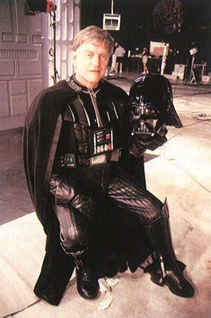

David Prose has passed away
29 November 2020
David Prowse has passed. The original Darth Vader actor is now one with the Force.

Obi-Wan, Yoda, Luke Skywalker, and Ahsoka Tano Explain The Force
28 November 2020
What is the Force? Obi-Wan, Yoda, Luke Skywalker, and Ahsoka Tano beautifully explain the Force.
The Force is what gives a Jedi his power.
It's an energy field created by all living things.
It surrounds us and penetrates us, it binds the galaxy together.
Life creates it, makes it grow.
Its energy surrounds us and binds us.
Luminous beings are we, not this crude matter.
You must feel the Force around you; here, between you, me, the tree, the rock, everywhere, yes.
It's not about lifting rocks.
It's the energy between all things.
It's a tension, a balance that binds the universe together.
To wield it takes a great deal of training, and discipline.
The Mandalorian finds The Child (Baby Yoda) and remembers his past
18 November 2020
After teaming up with IG-11, the Mandalorian finally reaches his bounty, a green, big-eared infant creature.
IG-11 is about to execute the creature the Mandalorian stares at the Child (Baby Yoda).
He is now remembering his past as a child (Din Djarin) when the Separatists attacked his home and killed his parents as they were trying to hide him.
A B2 Super Battle Droid finds him and is about to kill him only to be rescued at the last moment by 'Death Watch' in their blue and grey armor, possibly lead by Bo-Katan Kryze.
He was a foundling, joining the Mandalorian creed.
The Empire Strikes Back retcon by Auralnauts
22 August 2020
Auralnauts are once again tinkering with Star Wars. They have re-imagined (retcon'ed) 'The Empire Strikes Back (1980)' so that the prequel trilogy and sequel trilogy can finally make sense.
I have a bad feeling about this.
Animator Renato Roldan 'renato3xl' pitch video to Dave Finoli
05 May 2020
An animator Renato Roldan 'renato3xl' posted a awesome Star Wars animated video on YouTubed depicting the Millenium Falcon, X-Wings, and A-Wings attacking the second Death Star in Return of the Jedi. The soundtrack is from The Force Awakens trailer.
Dave Filoni, I want to work at STAR WARS, you are my only hope.
Star Wars - No one's ever really gone
14 April 2019
"No one's ever really gone" is the tag line for Star Wars - Episode IX - The Rise of Skywalker.
Is Luke really saying these words to Rey? If so, is it a flash back moment, or is it Force ghost Luke? Or is it just trailer marketing?
Star Wars - Episode IX - The Rise of Skywalker teaser is released
12 April 2019

Star Wars - Episode IX - The Rise of Skywalker teaser has been released at Star Wars Celebration 2019, revealing the title to the last film in the sequel trilogy and the Skywalker saga is. It will be released in theaters this christmas.
Disney files claim on Vader fan film and is making money! Update 2!
17 January 2019
The light side is victorious!
Lucasfilm has apparently "requested" Warner Chappell to remove their claim on Star Wars Theory's fan film: Vader - Episode 1 - Shards of the Past.
We can still believe that good will prevail over evil.
Disney files claim on Vader fan film and is making money! Update!
16 January 2019
Star Wars Theory got a reply from "Disney / Warner Chappell" and they have threatened him that if he counter-claimed with YouTube that they would strike his channel and delete the video.
In the words of Denarian Saal in Guardians of the Galaxy: What bunch of A-holes!
Note: I don't see an add on the video anymore like I saw yesterday... maybe the online backlash and making the front page of Reddit has been having the right effect?
Disney has previously been able to whoop EA for their Battlefront 2 screw up, so it is not improbable that they did the same to "Warner Chappell".
Disney files claim on Vader fan film and is making money!
15 January 2019
Disney has claimed the Star Wars Theory fan film: Vader - Episode 1 - Shards of the Past
Apparently, there is a moment when the music is too similar to the Imperial March. It is worth noting that the music is orginal and composed specifically for the film.
Eventhough legal, this is a low move for Disney and I hope that Lucasfilm had nothing to do with this. I genuinely think Disney saved Star Wars when it bought it from George Lucas. I like The Last Jedi and Solo even with their obvious flaws and the bad story choices, and bad dialog choices, that cheapened (even damaged) the established Star Wars lore.
Come on Disney! Do the right thing!
George Lucas rumored to be working on Star Wars Episode IX script
27 July 2018
I have a bad feeling about this.
George Lucas recently reveals what his intentions were for the sequel trilogy during James Cameron's Story of Science Fiction.
Lucas talks about a micro world, where Force users are just vehicles for the 'Whills' and they communicate with the Force users via the midi-chlorians.
What a terrible idea this is, as if George Lucas had not done enough damage to Star Wars with prequel trilogy and the midi-chlorians.
Lucas had visited the set of Rogue One, apparently making some suggestions, and also visited the set of 'Solo' apparently fixing/improving a scene. It would be good to know which scene and what was the original plan for it.
Disney should involve Gary Kurtz.
George Lucas wanted to kill Han Solo and get rid of Luke Skywalker
03 July 2018
Is Rian Johnson different George Lucas? This is what Synchronic Design suggest on Twitter
What if Rian Johnson was not so different George Lucas after all? Especially 1970's George Lucas who imagined a much darker end to Return of the Jedi with "the Empire ultimatly defeated but Han died, Luke walked off alone, and Leia was left to govern a Rebellion in tatters"?
What if George Lucas thought the Star Wars story did not need Luke Skywalker anymore?
What if George Lucas thinks Star Wars is just film that should not be overanalyzed?
Ahsoka Tano's staff inspired by the Star Wars Kid
10 March 2018
Star Wars Rebels has ended and Ahsoka Tano appears in the final scene after Sabine Wren decides to go look for Ezra Bridger.
Ahsoka is standing there with a staff which looks very familiar. Her staff is strongly inspiried by the staff used by the Star Wars Kid!
Star Wars Rebels Mid-Season 4 Trailer is released
19 January 2018
The end begins when Star Wars Rebels returns with its final episodes.
Will we witness Ezra Bridger, Kanan Jarrus, Hera Syndulla, Zeb Orrelios, Sabine Ren and chopper join the attack on Scarif?
What will be their fate?
Colin Trevorrow fired by Lucasfilm
06 September 2017
Lucasfilm has released a statement regarding Star Wars: Episode IX announcing that Colin Trevorrow has been fired and will not be directing the episode of the new trilogy.
The rumours started since early June that that the Colin Trevorrow, director of The Book of Henry and the new Jurassic World films, was running into script issues and that his relation with Kathleen Kennedy has soured.
This is now the 4th time that Lucasfilm replaces a director for a new Star Wars film. Tony Gilroy was put in charge of the Rogue One reshoots, Josh Trank was let go of a Star Wars anthology film, and more recently Ron Howard replaced Phil Lord and Christopher Miller at the helm of the Han Solo film.
I have a bad feeling about this.
Ego The Living Planet has heard of Star Wars - Guardians of the Galaxy Vol 2 (Bloopers)
24 August 2017
Two of Disney's biggest franchises finally crossover. Ego The Living Planet (also known as Nu-Xandar), from Marvel's Guardians of The Galaxy Vol.2, says he has heard of Lucasfilm's Star Wars!
Well, it is just blooper scene where Kurt Russell has multiple lapsus and says Star Wars instead of Star-Lord.
Watch more ...John Powell announced as the Star Wars Han Solo movie composer
27 July 2017
From the Lucasfilm headquarters, the Star Wars Show reveals that the up coming, and still untitled, Han Solo movie composer is John Powell.
Powel is an Academy Award nominated composer and is known for the music scores of the first three Bourne films, Shrek, Kung-Fu Panda, and How to Train Your Dragon.
He is the thrid composer ever to score a Star Wars live action film after John Williams and Michael Giacchino. The Star Wars Han Solo film is now directed by Ron Howard and has a release date set to the 25th of May 2018.
Watch more ...Star Wars Augmented Reality Headset
15 July 2017
Awaken your inner Jedi with augmented reality headset. Just watch the teaser commercial.
Here is the headset presented by Mike Goslin (V.P. of Advanced Developement at Disney) at D23 Expo 2017.
The headset looks similar to Microsoft's HoloLens but this one comes from Lenovo. You simply download the app to your phone, slip your phone into the headset and you are ready to play!
Star Wars: The Last Jedi Behind The Scenes
15 July 2017
Finally, some new official footage for Star Wars - Episode VIII - The Last Jedi.
In the same way we got behind the scenes videos for The Force Awakens and Rogue One, The Last Jedi gets one and it is glorious.
It looks amazing, everyone looks amazing in it and you can't help feel a little bit sad when seeing Carrie Fisher.
Watch more ...
Star Wars: Rogue One - Sacrifice
30 June 2017
YouTube channel "Jonde" has just released today a fantastic fan edit video of Star Wars: Rogue One.
The editing merges perfectly choosen Rogue One moments with an instrumental music that is strong and soft at the same time, raising all the melancolie of the Rogue One story and its characters ultimate fate.
"I fear nothing for all is as the force wills it."
Watch more ...
Star Wars 40th Anniversary
25 May 2017
Star Wars was released 40 years ago on the 25th of May 1997.
The best hommage made to original Star Wars film did not happen this year, or this month, as the anniversary date came closer, the best hommage made to the original Star Wars film happened last year in Januray 2016 when Tom F released "Star Wars: A New Hope - Modern Trailer" on YouTube.
This modern trailer uses the musical score from The Force Awakens' trailer. The fact fan made trailer of a 40 year film can be so strong and so powerful just confirms that Star Wars was just ahead of it time and was simply ground breaking.
Star Wars (1977) - 4th re-release trailer - 13th of August 1982 in Full HD (1080p)
12 May 2017
It has been 5 years since we've first felt the force, and it's stronger than ever.
There is only one way to celebrate the fifth anniversary of Star Wars.
See it ... again!
Join Luke Skywalker, Princess Leia, Han Solo, Chewbacca, Darth Vader, Obi-Wan Kenobi, C-3PO and R2-D2.
Join in the celebration this summer when Star Wars returns to a galaxy near you.
Star Wars.
Stars August 13th for 3 weeks only.
The force will be with you ... always.
See the official Star Wars site Star Wars Re-Release History.
13 August 1982 - "The original is back."" Star Wars is re-released in theaters for the fourth time with a Revenge of the Jedi trailer.
Star Wars (1977) - 3rd re-release trailer - 4th of April 1981 in Full HD (1080p)
9 May 2017
Now you can experience the force again.
Star Wars.
The original, legendary Star Wars is back.
The most popular film of all time.
Star Wars.
Coming back to your galaxy for 2 weeks only.
Star Wars.
The force will be you.
Starting Friday, April 10th.
The original file name from 'Team Negative 1' indicated that this trailer was from 1979. In fact, given that it mentions a re-release date of the 10th of April, this is the trailer for the third re-release in 1981.
See the official Star Wars site Star Wars Re-Release History.
10 April 1981 - "It's back! The Force will be with you for two weeks only." Star Wars is re-released for the third time, but with a major new addition: "Episode IV - A New Hope" is added to the opening crawl.
Watch more ...Star Wars (1977) - Teaser Trailer 1976 in Full HD (1080p)
4 May 2017
A long time ago, the teaser for Star Wars was released. The film's name would be later changed to Star Wars - Episode IV - A New Hope.
Watching this trailer nobody could predict that the world of science fiction and cinema would be changed forever once the film would release on the 25th of May of 1977.
Watch more ...